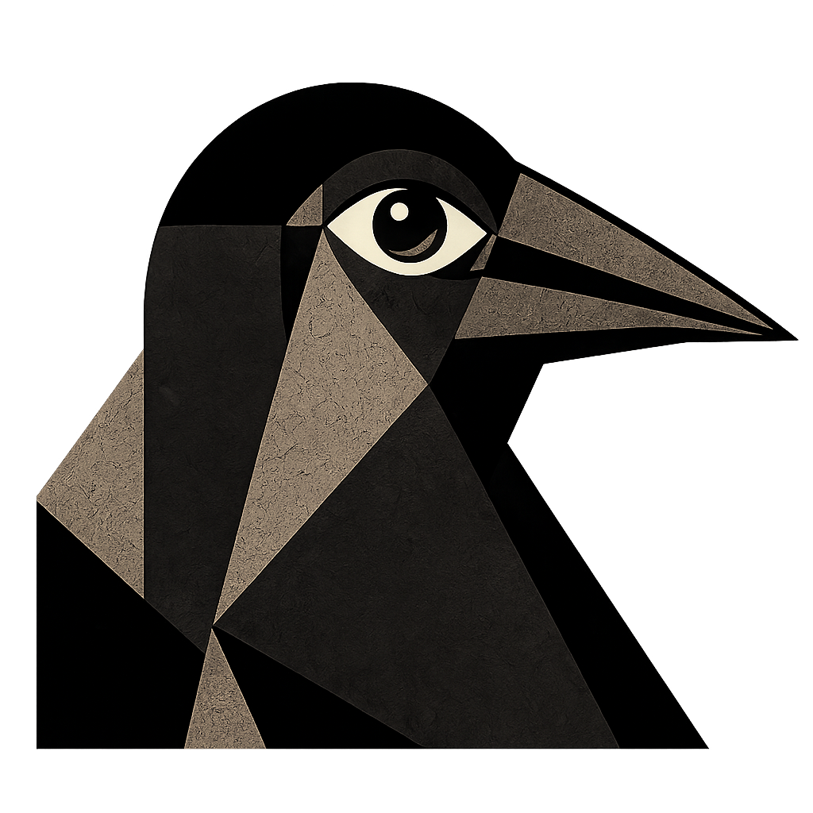

BIRDHAUS
Forms Over Feathers
A modernist movement of geometric avian studies.
Est. 2026
Manifesto
We reject realism.
We embrace reduction.
We see birds in shapes.
We build with geometry.
The Collection
001
The Crow
002
The Bluejay
003
The Raven
004
The Magpie
View Collection 001
->